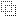
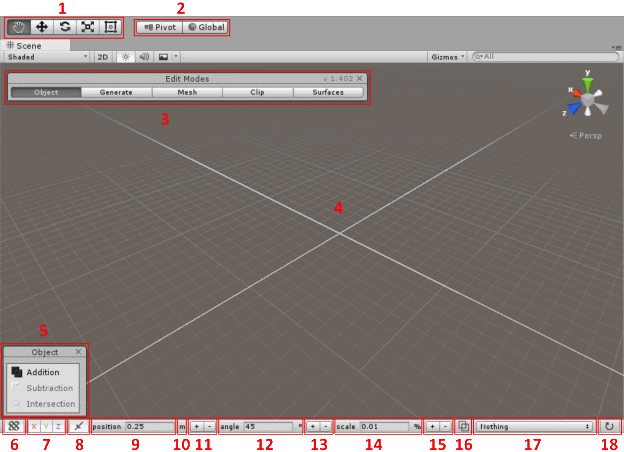

What is CSG?
CSG stands for Constructive Solid Geometry and is a technique to build models by combining and removing simple shapes called brushes, using boolean operations. The advantage of using CSG for level design is that it's very easy to both define and modify spaces within a game, to start simple and refine later on. Since level design is a lot about iteration and not so much about generating geometry, CSG is a more appropriate technology to quickly prototype and form the basis of your levels. Brushes can easily be moved around, it takes seconds to move windows, doorways and whole sections of a level around and you don't need to worry about vertices & triangles or the gaps between them. For this reason CSG has traditionally been used for level design by many companies throughout the history of the game industry.
What are brushes?
Brushes are simple shapes that act as building blocks to build more complicated shapes using boolean operations.
 |
|
|---|---|
| convex | non-convex |
Brushes are restricted to be convex, this means that you can never have surfaces that create an inwards corner. So for instance spheres, cubes, pyramids and cylinders are all fine. But an L shape isn’t convex.
| multiple convex brushes |
Fortunately it’s possible to build any shape out of multiple convex shapes. An L shape can be created from 2 box shapes for instance. Real Time-CSG has tools to free-draw shapes that will generate all the brushes under the hood for you. For more information about creating brushes, see the generate edit mode section.
What are boolean operations?
Boolean operations define how brushes interact with each other. The following boolean operations are supported by real-time CSG.
 |
 |
|
Sometimes you’ll also see “ Passthrough” which is a special mode that doesn’t actually perform a CSG operation, but helps group things together when, for instance, drag & dropping. For more information about passthrough mode see the passthrough section of drag & drop.
To make more interesting shapes you can perform boolean operations on the results of other boolean operations. To the left you can see a shape defined by subtracting another shape, which itself is defined as a cube subtracted by a cylinder. Since all the shapes and operations are non-destructive and real-time, you can move, rotate, scale or modify all the basic shapes and their operations and the final mesh will change accordingly.
The picture on the left you can see how the hierarchy looks to get the previously shown picture. All CSG operations are applied from top to bottom. The large cube is an additive brush from which all items below are removed.
The second item is a subtraction operation which combines the items inside it, and subtract that from the Large cube which is above it in the hierarchy. The small cube is an additive brush from which the last item, the cylinder, is subtracted. Since the “subtraction operation” is set to subtraction, the shape defined by subtracting the cylinder from the cube is subtracting from everything above it in the hierarchy.
What are models?
Models are objects that hold all the meshes that are created from all the brushes and operations that are contained by the model. At runtime (in play-mode or in your build) all the operations and brushes are removed and replaced by these meshes. This means that anything you can do with a regular Unity mesh at runtime, you can do with a model as well.
 |
 |
|---|---|
| regular world | inverted world |
An important setting you can set on models is the “Inverted world” setting, this will make the model consider the world solid by default, and you’ll need to remove from it to create geometry. This is useful for when the geometry you want to make doesn’t have any outer walls and you don’t want to be bothered with manually discarding (removing) these unused surfaces. For more information about models, see the model settings and tools section, for more information about discarding surfaces, see the surface edit mode.
The scene view
Here is an overview of all the elements that you’ll see in your view when Real Time-CSG is enabled. Note that when Real Time-CSG is disabled (you can toggle this by pressing control-F3) all the extra elements will not be shown and you will just see the default unity scene view. Also note that if you click on the x buttons of the "edit modes" and "tool" windows, then you convert the in scene windows into a dockable window.

- Transform Tools. See edit modes for more information.
- Transform Gizmo Toggles. See the grid for more information.
- Edit modes. See edit modes for more information.
- The grid. See the grid for more information.
- Edit mode helper window. See edit modes for more information.
- Turn grid rendering on/off. See the grid for more information..
- Lock movement along X, Y and/or Z axis. See the grid for more information..
- Turn snapping on or off. See the grid for more information.
- The grid snapping step size for movement. See the grid for more information.
- Click to cycle between the units to show the snapping step size in (meters, centimeters, feet, inches). See the grid for more information.
- Double (+) or half (-) the grid snapping step size. See the grid for more information.
- The snapping size for rotation. (used while rotating).
- Double (+) or half (-) the rotation snapping.
- The scale snapping size. (used while scaling).
- Multiply the scale snapping size by 10 (+) or divide by 10 (-).
- Toggle wireframe mode for this view. See wireframe mode for more information.
- Toggle which helper surfaces to show. See helper surfaces for more information.
- Force rebuild all the CSG models.
Dockable window
Both the in scene “edit modes” and “tool window” have an x button in the top right corner.

When clicked, both windows will change in a combined dockable window:

You can dock this window just like, for instance, an inspector window. If you close that window it’ll revert back to the in scene windows above.
The grid
 |
|
|---|---|
| show/hide grid | enable/disable snapping |
The grid lines show where, if snapping is enabled, the brushes are snapped against. The orientation of the grid shows in what direction the axi are turned.
 |
 |
|---|---|
 |
|
| unity set to global mode | unity set to local mode |
If the transform gizmo toggles (see the scene view) are set to global the grid will always be orientated with an unrotated XZ plane. If it’s set to local, however, then the grid shows how the current selected object is rotated.
| grid snapping set to 1 m | grid snapping set to 0.25 m |
The grid snapping step size sets the distance between the lines which you snap your brushes against if snapping is enabled.
| manually set the grid size | double (+) or half (-) the grid size |
You can manually set the grid size in the number section, or click on the +/- buttons to double or half the grid size.
| set the same grid size for X, Y and Z | set a different grid size for X, Y and Z |
If you click on position then you can toggle between the grid size being set for all axis uniformly or for all axis individually.
 |
||
|---|---|---|
| unit set to meters | unit set to centimeters | unit set to milimeters |
| :-: | :-: | :-: |
 |
 |
|
| :-: | :-: | :-: |
| unit set to feet | unit set to inches |
If you click on the little symbol behind the position value you can cycle between all the different distance units and the values will be shown in those values. Note that the default internal unit is meters.
| X axis not locked | X axis locked |
Individual axis can also be locked which makes it impossible to use those axi, which is useful when you want to avoid accidentally moving in a particular direction.
Wireframe mode
| wireframe mode toggle | effects button |
If you toggle the “wireframe mode button” in the toolbar (see the scene view for more information) your sceneview will show your scene but in a special wireframe mode with cleaner lines than the regular unity wireframe mode. You will probably also want to turn off the environment map by clicking on the “effects button”.
 |
|
|---|---|
| wireframe mode off, environment map on | wireframe mode off, environment map off |
| wireframe mode on, environment map off |
This makes it easier to see things when things overlap each other. By clicking multiple times on the same location you can cycle between all the objects that overlap each other. Note: Setting this mode sets a special shader and attaches it to the sceneview, unfortunately Unity stores this connection computer-wide. This means that if you open another project that doesn’t have Realtime-CSG it’ll try to use a shader for that view, that doesn’t exist in that project. You can fix this by changing the layout in the top right corner.
Helper surfaces
Real Time-CSG can show several helper surfaces that help visualize certain surface properties for surfaces that are not actually visible at runtime The following helper surfaces can be shown:
| description | |
|---|---|
 |
Discarded surfacesThese are surfaces that are marked as ‘discarded’ and will not be rendered or be part of the collision mesh. See the surface edit mode for more information about how to flag a surface as being flagged as discarded. |
Shadow only surfacesThese are surfaces (or entire models) that are flagged as “Shadow Only”. These surfaces are only visible to the shadow rendering code. This allows you to see these surfaces. See the surface edit mode for more information about how to flag a surface as being flagged as “Shadow Only”. See model settings and tools for more information on how to flag an entire model as being “Shadow Only”. |
|
 |
Invisible surfacesThis can visualize all surfaces that are removed by the CSG algorithm. This is useful to, for instance, see a subtractive brush that is not touching any other geometry. A subtractive brush removes geometry and subtracting from nothing results in and shows nothing at runtime. Showing the invisible surfaces allows you to see the subtractive brush. |
 |
Collider surfacesYou can set your model to be a collider only mesh. This surface mode lets you see those meshes since they are not visible at runtime. See model settings and tools for more information. |
 |
Trigger surfacesYou can set your model to be a trigger mesh. This surface mode lets you see those meshes since they are not visible at runtime. See model settings and tools for more information. |
Selection and placement
It’s worth mentioning that Real Time-CSG has some non standard behaviour that might not be obvious at first sight.
Deep clicking
If you click several times on the same spot, you will cycle between all brushes that beneath the cursor at that point. This makes it easier to select brushes that you might see in wireframe mode, yet is blocked by one or more other brushes.
Marquee selection
| object mode marquee selection | Mesh mode marquee selection |
In object edit mode you can select multiple brushes by clicking outside of your selection and dragging a rectangle that selects all the brushes that are inside it. In mesh edit mode, however, this will select vertices, edges and polygons instead.
“Handle as one object”
Every CSG operation has a toggle named “Handle as one object”, when enabled this will cause the entire contents of this operation to be handled as if it’s one object. This means that if you click on any brush contained in the operation, all the brushes within the operation will be selected.
Drag & drop
Drag & dropping Materials onto brushes
You can drag any material onto any brush surface by simply dragging the material onto the surface of the brush. If you hold shift while drag & dropping then the material will be applied to all surfaces of all the brushes of the current selection.
Drag & dropping Brushes/Operation Prefabs into the scene
By default dragging will snap to the grid if snapping is enabled, but by holding control you can reverse this behaviour. This means if the grid is enabled, holding control will disable it while dragging. If the grid is disabled, however, holding control will enable the snapping instead. You can drag & drop onto both MeshRenderers (that have MeshColliders) or onto CSG generated geometry. The moment you’ve turned your CSG operation or CSG brush into a prefab, the following options will be available to you:

Instantiation
This option allows you to determine if the prefab should be a reference (default unity behaviour) or a copy. The difference is that a copy will not be connected to the original prefab. This is useful for when you want to be able to quickly drag & drop some base shapes into your scene, perhaps as a starting point, but do not want them to be updated when the prefab might change.
Placement
This option allows you to define how the prefab should be placed into the scene.
- Default is used to place objects in the same way as unity.
- Align to surface will place and rotate the prefab to align with the surface under the mouse cursor.
- Align Surface up will place and rotate the prefab to align with the surface under the mouse cursor but it’s up direction will always be up. This is useful to place things that in the real world always point upwards.
Front
Since it’s impossible to determine what was considered the front when creating the original prefab, you can specify here the original orientation of the prefab. The names match the names seen in the drop-down in the top right corner.
Drag & dropping Meshes into the scene
When you drag & drop a mesh, which is not a CSG model, into the scene then it’ll snap to the grid as long as real time-CSG is enabled. It’ll also snap against anything the surfaces behind the cursors just like a regular CSG model would, but unfortunately, due to Unity limitations, there is no way to set up the surface alignment like with brushes. Snapping your meshes to another mesh only works the other mesh has a collider.
Passthrough mode
Suppose you want to first remove part of a wall using a subtractive brush, and then create the window frame using additive brushes. Without “passthrough mode” you could make an operation be only additive or subtractive, but not both. Which is problematic since you can only set the drag & drop settings on a brush or an operation. Fortunately passthrough mode lets you group multiple brushes (and sub-operations) inside an operation, and let the CSG algorithm ignore the operation itself.
Dragging in the scene
By holding shift while dragging an operation or brush in the scene, you can move the selected items over the surface beneath the mouse cursor in the same manner as you would during drag & drop. You can set the same options as for the prefab on your operations & brushes.

Edit modes
Real Time-CSG has several different modes that focus on specific aspects of modeling with brushes. Each edit mode has it’s own helper window that will provide you with context specific information and functionality. This context specific information can depend on the current transform tool (see the scene view for more information)
You can choose to have this edit window in the scene view, or as a dockable window. You can switch to the dockable window by pressing the x button of the helper window, or the x button on the edit mode window.
Object edit mode
When the Object edit mode is activated, each Transform Tool (see the scene view) has different behavior. Each transform tool will show a different tool window, unless there is no selection. All tool windows will show all the boolean operations (see boolean operations) that you can set your operations or brushes to. Only operations have the “Pass through” option. Another thing to realize is that all movements, rotations and scaling are rotated along with the grid, and this depends on the “Transform Gizmo Toggles” global/local settings. (see the grid for more information)
When the move tool is selected:

You will see the following tool window:
Which allows you to manually move an object with the given offset and pressing the “Move” button. If you press “Clone + Move” instead you will move a copy of the original instead. When you move the object using the move handle in scene and then press D you will move a clone of the object you’re moving instead of the original.
When the rotate tool is selected:
You will see the following tool window:
 The pivot is the point around you rotate all the selected objects. If the pivot mode of “Transform Gizmo Toggles” (see the scene view) is set to “center” then the pivot will always be set to the center of your selection. You will see a pivot gizmo in the scene that shows you the position of the pivot. If the pivot mode is set to “pivot” you can move it around in the scene.|
The pivot is the point around you rotate all the selected objects. If the pivot mode of “Transform Gizmo Toggles” (see the scene view) is set to “center” then the pivot will always be set to the center of your selection. You will see a pivot gizmo in the scene that shows you the position of the pivot. If the pivot mode is set to “pivot” you can move it around in the scene.|
You can manually set the pivot in the bottom of the tool window. The “Recenter pivot” button will set the current pivot to the center of the selected objects. If you click the Rotate button you will manually rotate the selected objects around the pivot by the given offset rotation by the X / Y / Z rotation values in the Offset part of the tool window.
When the scale tool, Or the rect tool is selected:

You will see the following tool window:
 The tool window will only show the boolean operations mentioned in the beginning of this section.
In the scene view you will see points on the bounds of your selection which you can drag to scale the selection within your bounds.
Only the scale tool will show the scale gizmo at the center of the bounds.
The tool window will only show the boolean operations mentioned in the beginning of this section.
In the scene view you will see points on the bounds of your selection which you can drag to scale the selection within your bounds.
Only the scale tool will show the scale gizmo at the center of the bounds.
Generate edit mode
Currently the following brush generators are supported by Real Time-CSG. All generators only finalize their creation when you press enter (commit). You can cancel the creation of your brushes by pressing escape (cancel). Each generator has a tool window that also holds the default material to use for the brushes that are generated, which you can change into any material. Finally, there are the CSG operations that the generated brushes will use that you can set in the tool window.
Extruded brushes
The following brush generators basically allow you to create a 2D shape on any surface, and then extrude that shape into a 3D brush. If you extrude the shape inwards into another brush, it’ll automatically become a subtractive brush, if you extrude outwards away from the surface you’re extruding from, then it becomes an additive brush. The tool will use the default height when you press enter before you start extruding. The default height will automatically be set to the height of the last extruded brush, or you can set it manually in the tool window.
Free-draw
This generator allows you to create a generic shape that will automatically be split into multiple convex pieces if necessary. Extruding this shape will then create an operation containing multiple brushes. You can do this by clicking on the surface you want to build a shape on, creating the 2D polygon as you go along. At least 3 points are needed for this polygon to be valid.
This 2D polygon can also not self-intersect, although this restriction will probably be removed in the future. When a polygon is not valid, it’ll turn red. Once your shape is created, you can then still move the points around. If you hover over the polygon and drag it, you can extrude it. If you double click on your points or edges, you can turn them into curves. By clicking multiple times you cycle through all the curve/edge modes. An edge can be straight (the default), a mirrored or a broken curve. A mirrored curve means that the curve is continuous on both sides of the edge point, a broken curve means that the edges on both sides of the point can go in different directions. This can mean that on one side of a point, the edge can be straight, but on the other side it’s a curve. If you select an edge, you can then split this edge into two by clicking on the “insert point” button in the tool window for this generator. You can also set the number of times the curve is split into separate pieces in the “Split” text field. The height text field, unsurprisingly, allows you how far the shape is extruded. In the mesh edit mode you can hold shift while dragging on a surface, and it’ll automatically turn into a Free-draw shape that you can then extrude. This allows you to easily extrude surfaces. Just as with regular free-draw shapes you can then still modify the points before you commit them by pressing enter. See mesh edit mode for more information
Box
The box is a simpler primitive than the free-draw generator, which allows you to quickly create a 2D rectangle which you can then extrude. In its tool window you can manually set the width, length and height of the box.
Cylinder
The cylinder allows you to create a circle on any surface, and like the free-draw and box generator, extrude it. You create the circle by first giving the center point and then dragging out the second point with the distance between them being the radius of the circle. The tool window allows you to set the “height”, “radius” or the number of “sides” the cylinder will have.
Note that setting the number of sides to 3 allows you to create a triangle shaped shape instead.
 |
 |
|
|---|---|---|
| start mid side set | start mid side not set | angle set to 6 degrees |
The sides of the circle start at the second point, unless the “Start mid side” is toggled in which case the second point is in the middle of one of the sides instead. The “angle” offset is used to manually rotate the cylinder by the given offset.
 |
|
|---|---|
| smooth shading not set | smooth shading set |
The “Smooth shading” toggle allows you to make the sides of the cylinder use normal smoothing, or to give them a faceted look.
| radial caps not set | radial caps set |
The “Radial caps“ toggle will allow you to determine if the caps of the cylinder will be single polygons or radial caps. The later will look like a fan spreading around the center point. Finally, “Fit shape” is there so when the cylinder has has a very low number of sides and the shape is irregular and smaller than a square, that it’s fitted to that square, which makes the size of the shape more predictable.
Other kinds of brushes
Not all kinds of generated brushes are 2D shapes being extrapolated. Right now only spheres fall into this category, but more planned shapes fall into this category.
Sphere
The sphere is created by clicking on a surface to determine the center of the sphere, and then dragging it out to get the radius of the sphere. If you toggle “Hemisphere” it’ll create a hemisphere instead of a sphere, with the bottom aligned with the surface you created the center point on.
The “Smooth shading” toggle allows you to set if you want the sphere or hemisphere to look smooth, by turning normal smoothing on on all its surfaces, or faceted. In the tool window, after you’ve created the sphere or hemisphere you can adjust the radius manually in “radius” text field. The sphere is created by splitting the sides of a cube multiple times and placing these points on a mathematical the sphere. These splits are done in multiple directions. So when in the tool window, you set splits to one, each side of this cube will be split into 4 quads, that themselves are split into 2 triangles. You can increase the splits to make the sphere or hemisphere more smooth.
The Mesh edit mode
In this mode you can edit the control mesh of the brushes. You can select vertices, edges and polygons by clicking on them. If you hold the ctrl key while clicking on them you can toggle the selection on or off. You can also use a drag rectangle to select everything that’s inside the rectangle (see the “Marquee selection” section of selection and placement). Once selected you can manipulate these vertices, edges and polygons to change the shape. Keep in mind that this shape will only be valid if it’s convex (see what are brushes?).
Invalid brushes will show up with a red outline and will snap back to their last correct shape when no longer selected.
If you press delete all selected vertices will be deleted. If the resulting shape is invalid, the whole shape will be deleted. If you press M while selecting an edge, then the vertices of that edge will be moved to the center of this edge and merged.
If you click on the “Flip” X/Y/Z buttons the selected brushes will be mirrored on the X/Y or Z axis around the center of the selected brushes. The “Snap to grid” button will snap all selected vertices to the grid line closest to all vertices.
When the transform tool is set to then you can move your selection. You can merge vertices together by moving them on top of each other, the edge between them will be removed. You can go to this mode by pressing the standard unity hotkey W.
When the transform tool is set to then you can rotate your selection. You can go to this mode by pressing the standard unity hotkey E.
When the transform tool is set to or then you can scale your selection. You can use the standard unity hotkeys R (scale) and T (rect) for this
If you hold shift while dragging a polygon, then you can extrude the polygon into another brush. See the “free-draw” section in generate edit mode for more details.
If you hold shift while dragging an edge or vertex then you will bevel/chamfer this edge or vertex instead. The further you drag, the wider the bevel/chamfer will be. The default material in the tool window will be used for the new surfaces created by the beveling/chamfering.
The Clip edit mode
 This edit mode is here to easily split or clip a brush or multiple brushes by an infinite plane that you define by first putting the mouse down on a surface and then dragging it over that surface to create a plane that intersects that line.
After this you will see two points that you can then manipulate to change the plane. You can also click after this to create a third plane for more precise control over the splitting plane.
The tool window will show three options on how to use the clipping plane, “Remove in front” / “Remove behind” which will let you specify which side of the plane will remove (parts of the) brushes, or “Split” that will create a new brush for each (part of each) brush that is removed.
This edit mode is here to easily split or clip a brush or multiple brushes by an infinite plane that you define by first putting the mouse down on a surface and then dragging it over that surface to create a plane that intersects that line.
After this you will see two points that you can then manipulate to change the plane. You can also click after this to create a third plane for more precise control over the splitting plane.
The tool window will show three options on how to use the clipping plane, “Remove in front” / “Remove behind” which will let you specify which side of the plane will remove (parts of the) brushes, or “Split” that will create a new brush for each (part of each) brush that is removed.
The tool window also shows the default material to use for the new surface area that is created when splitting or clipping brushes.If you’re satisfied with your result you can click on Commit (or press the hotkey Enter), otherwise you can press “Cancel” (or press the hotkey Escape).
The Surface edit mode
In this edit mode you can modify the texturing of the surfaces of your brushes. You can click to select your surfaces. If you hold control while clicking you can toggle the selection of your surfaces. If you hold shift and hold your left mouse button then you can select all the surfaces that will be underneath your mouse while you move your mouse. The tool window shows the material of the current selected surface and allows you to change it. You can manually change the offset, scale and rotation of your texture in the tool window. The -90/+90 buttons are shortcut buttons to quickly rotate your texture by 90 degrees in case it’s sideways or upside-down. The “UV-Justify” buttons try to align the texture to particular corners of your surfaces. The “C” button centers your texture on your surface. The “Fit” buttons will try to make sure that the scale and position of your texture will fit as tightly as possible on your surface. You can choose to only do this in the U or V direction, or both (UV).
The “Reverse” buttons will reverse the direction of your texturing in the U, V or both UV directions. The “Reset” buttons will use the default texture coordinates in the U, V or both UV directions.
The “UV scale” buttons allow you to quickly multiply the scale by 2, or divide it by 2.
The “Discard” button will essentially mark a surface as not being part of the final mesh created for the model this brush in it. It will not be rendered or be part of the collision mesh. The “Shadow-Only” is like the “Discard” button except that it’ll still cast shadows. The “Visible” button will make the surface behave like a regular surface again. Note that if you cannot see your surface you can always turn on discarded or shadow-only surfaces in the helper surfaces pop-up to make Real Time-CSG render them. See the scene view for more details.
The “Smooth” button will make a surface smooth the normals between all the currently selected surfaces, “Un-smooth” reverses this process. Surfaces are not smoothed by default.
The “Lock texture to object” toggle ensures that when you move a surface around in the world it’s texture coordinates will move with it, otherwise the texturing will stay in the same spot even when the surface is moving.
You can copy a surface from one surface to another by holding the G key and clicking on the first surface to ‘get’ the material, and then every next surface you click on will copy the previous material. If you drag your mouse over multiple surface while holding the G key then the surface materials underneath your mouse will ‘smear’ into each other, making sure that the textures are correctly rotated/scaled and moved to avoid seams.
When the transform tools are set to then you can drag the texture over the surface of your brushes. Keep in mind that this movement is snapped to the grid.
Note: Texture coordinates repeat over every whole number, meaning that if your snapping is set to 1 then you won’t see any changes when moving your texture over the grid. If you turn off snapping, or decrease the snapping size you can then move the texture.
 |
|---|
| surface texture rotation |
When the transform tools are set to then when you click on the surface of your brush, and then drag outwards, a circle will appear. When you then move your mouse around that circle your texture will rotate around that original point, following your mouse.
Model settings and tools
The model holds all the meshes that are generated by all the brushes and operations that are inside it. At runtime all the brushes and operations are removed. Usually the meshes that are inside the model are hidden to reduce the clutter, but if you want to inspect them you can use toggle the “Show Meshes” checkbox. Keep in mind that these meshes will be updated and you should not try to modify them yourself since all your changes will be overwritten eventually. If you want to generate a mesh without a color channel, without tangents, normals or an UV1 channel, then you can use the checkboxes to avoid those channels to be generated. Usually you want to keep those around however. At the bottom you can see some quick statistics on all the brushes in your model.
 Note: When the model’s “Lightmap Static” flag is set, the lightmap UVs are automatically updated about a second after you’ve stopped modifying the model. Real Time-CSG calls a Unity method here that creates the lightmap UVs for the modified meshes, which is unfortunately somewhat slow.
Note: All model flags and tags are automatically assigned to its meshes.
Note: When the model’s “Lightmap Static” flag is set, the lightmap UVs are automatically updated about a second after you’ve stopped modifying the model. Real Time-CSG calls a Unity method here that creates the lightmap UVs for the modified meshes, which is unfortunately somewhat slow.
Note: All model flags and tags are automatically assigned to its meshes.
Behaviour
This section has a single option called “Inverted world” which will make the whole model solid by default. This allows you to subtract from the world instead of add to it. This is useful for when your entire level is, for instance, underground and you don’t need to have the outer shell for your geometry.
Physics
In this section you can determine how the generated meshes interact with physics. If the “Generate Collider” toggle is set a collider is generated for all the visible geometry. If you then also set “Model is trigger” then the trigger toggle will be set on the collider. If you wish the collider to be convex you can toggle the “Convex Collider” setting. Note if you’ve set the “Model Is Trigger” setting then for performance reasons, it is recommended that you also set the “Convex Collider” setting. If you set the “Auto RigidBody” toggle, a RigidBody will automatically, when necessary, be created or destroyed for all the generated colliders, and all the appropriate default settings will be set for various scenarios. The “Default Physics Material” allows you to set the physics material for all the created colliders. In a future version physics materials will be settable per surface.
Rendering
A model might not need to be drawn if it’s an invisible collider or a trigger. If you toggle the “Do Not Render” setting, then the model will not create MeshRenderers for this model so will not be visible. In the “Cast Shadows” drop down you can determine how shadows will interact with this model. Here you can turn shadows off, or make the mesh double sided for shadow rendering. Or set the whole model to be shadow casting only. Note that you can also set individual surfaces to be shadow only, see the surface edit mode for more details. Finally there’s the “Receive Shadows” toggle that allows you to turn shadows showing up on your model on or off. Note that some of these settings will make your model invisible, but you can still see your invisible model in the editor if you turn on the appropriate helper surfaces (see the scene view for more details).
Lighting
In the lighting section of the model inspector there is currently one option “Preserve UVs” which will set the similarly named setting in the lighting window for you on all your meshes. More lighting options will be added in this section over time. If you need any particular functionality, be sure to request it in the feedback site.
Exporting
In this section of the model inspector you can export your model to several formats by choosing your desired format from the dropdown and clicking on the “Export to ..” button. Once exported your model will be replaced by whatever you exported your model to. Also a “CSG model exported” component is added to the gameobject that held your model, which will remember the original CSG model for you. The original CSG model and all its operations and brushes are still there, they’re all hidden from you to avoid the clutter. These will automatically be removed at build time, so you won’t pay any cost for them at runtime. If you want to revert to your original CSG model, you can click on “Revert back to CSG model”. If you choose to remove your original CSG model permanently you can click on “Remove hidden CSG model”.
A text based FBX file
This is a common format used by DCC (Digital Content Creation) tools and allows you to load your mesh into another package such as Maya or 3DS max, edit it, and let Unity re-import it. The FBX will be instantiated into the model, replacing the CSG model, which will be hidden and removed at built time. If you update the FBX file outside of unity, then this FBX instance will be updated in your scene.
A scene stored Unity mesh
The scene based Unity mesh is useful if you want to edit the mesh with another asset from the asset store. Keep in mind that this mesh is stored in your scene itself. Unfortunately this means it will not work if you try to create a prefab out of this. This is unfortunately a Unity limitation.